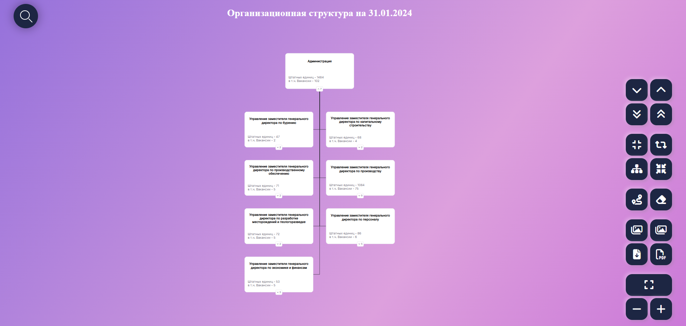
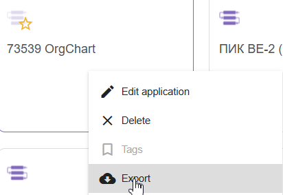
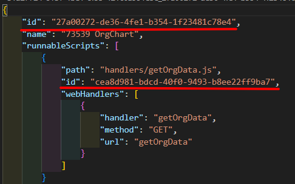
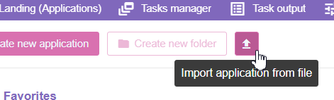

Постановка задачи
ТЗ и источники данных
Ссылка на приложение

Для подключения новой модели:
- в файле
env.jsзаполнить данные для подключения к модели/токен и источники данных модели - в файле
properties.jsзаполнить переменныеPROPERTIES, гдеPROPERTY_- это наименование видимое в карточке,CUBE_PROPERTY_- это наименование колонки из МК источника данных, иmainNodeId- longId корневого элемента (верхний уровень). - в мультикубе с исходными данными должно быть преднастроено view: строки - наименование узлов одномерное, столбцы - наименования параметров для отображения и тех.данные
- для переноса приложения на другой сервер:
-
Необходимо экспортировать приложение

-
В скаченном архиве заменить в файле
.omapp.jsonвсеidна сгенерированные uuid (например https://www.uuidgenerator.net/)
-
Импортировать приложение с указанием на интересующий архив приложения
